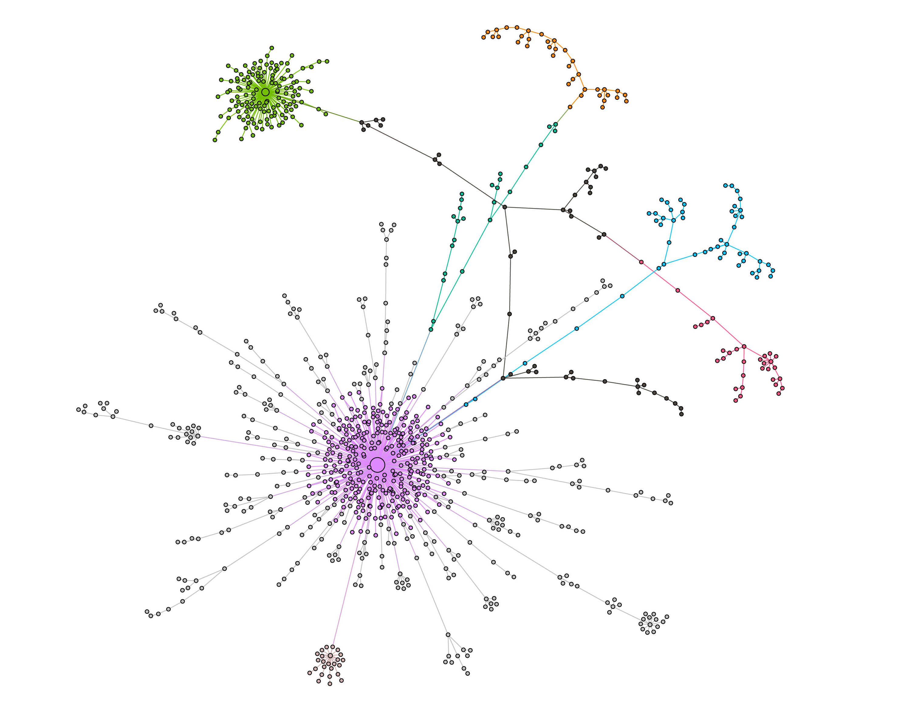

Yuwei Chuai (揣玉伟)
Beihang University, ChinaInterseted in：computational social science, social networks and machine learning (计算社会科学，社交网络，机器学习).
Working Paper

Anger makes fake news viral online
Fake news carries more anger than real news, which leads to more incentivized audiences in terms of anxiety management and information sharing and therefore makes fake news more viral online.